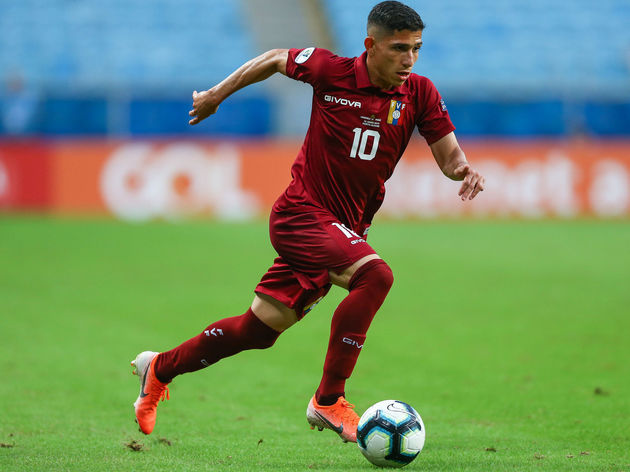

Contratação
Savarino é do Galo!
Clube dos EUA oficializou, pelo Twitter, a venda do venezuelano ao Galo
O Real Salt Lake, dos Estados Unidos, oficializou nesta sexta-feira a transferência do atacante venezuelano Jefferson Savarino para o Atlético. O jogador, de 23 anos, se apresentou em BH para fazer os exames médicos e assinar contrato com o Galo. Ele foi indicado pelo técnico Rafael Dudamel, que o convocou quando era treinador da seleção da Venezuela.
Por meio do Twitter, o Real Salt Lake anunciou a venda de Savarino ao Atletico. O clube dos EUA divulgou que o valor da transferência foi um recorde, embora não tenha revelado as cifras. O site The Athletic informara que o Galo pagará US$ 2 milhões (R$ 8,6 milhões na cotação atual) por 60% dos direitos econômicos do venezuelano. O clube mineiro, no entanto, não confirmou o valor do investimento.
O jovem venezuelano costuma atuar pelas pontas, especialmente pela direita.
Com a camisa da Seleção Venezuelana, atuou 12 vezes e marcou um gol sob o comando de Dudamel. Em 2019, fez parte do elenco vinotinto na Copa América disputada no Brasil.
Esta é a sexta contratação do Atlético para a temporada 2020. Antes de Savarino, o clube alvinegro já havia anunciado as chegadas do lateral-direito Mailton, do lateral-esquerdo Guilherme Arana, do volante Allan e dos meia-atacantes Dylan Borrero e Hyoran.